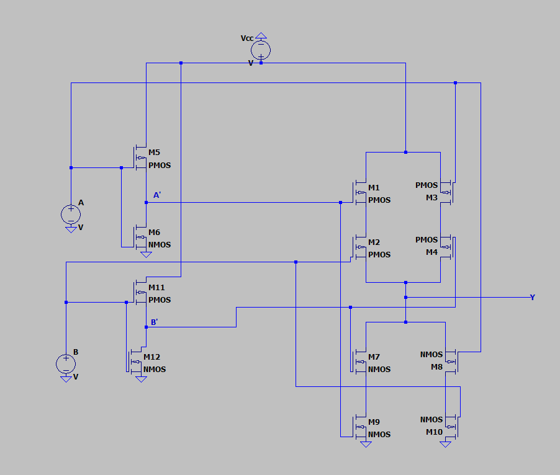
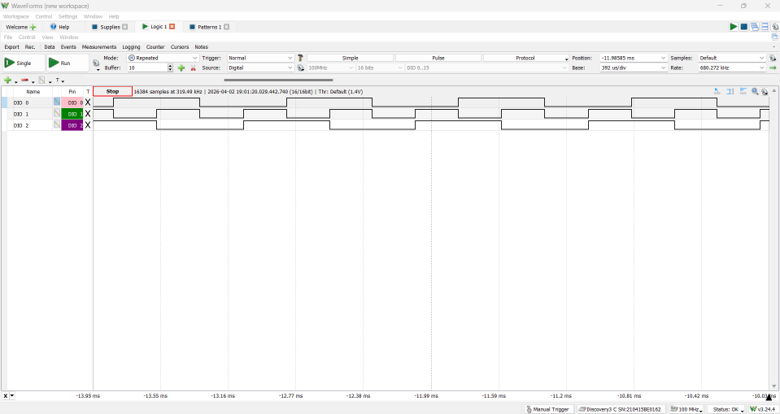
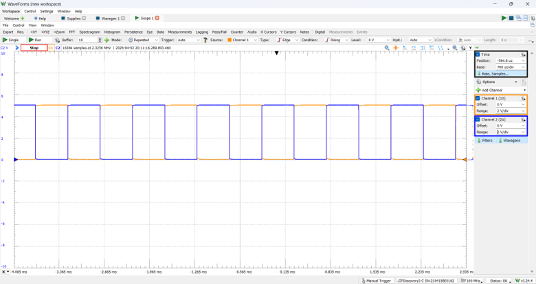

Projects / PROJ-2EI4-XOR
Transistor-Level XOR Gate — Two Implementations
1.0Overview
An XOR gate (Y = A′B + AB′) designed and built entirely from discrete MOSFETs on a CD4007-family IC, in two different logic styles: a static CMOS implementation with complementary pull-up and pull-down networks, and a pass-transistor implementation. Both were verified functionally with a logic analyzer, then characterized under a capacitive load to compare their switching performance.

2.0Design: Transistor Sizing
In CMOS logic design, the pull-up network (PMOS, connecting Y to VCC) and pull-down network (NMOS, connecting Y to ground) must have matched switching delays to minimize glitches during transitions. PMOS devices conduct with holes and NMOS with electrons. Since electron mobility is roughly 2.5× hole mobility, the PMOS W/L ratio must be scaled up to compensate:
| Device | W/L ratio | Rationale |
|---|---|---|
| PMOS | 5 : 1 | 2.5 : 1 PMOS:NMOS ratio compensates for hole vs. electron mobility, balancing pull-up and pull-down delay |
| NMOS | 2 : 1 |
The CD4007 IC used matches this sizing, so the ideal ratio holds without external compensation — neither half of the gate lags the other.
3.0Functional Verification
Verification used the Analog Discovery 3's digital I/O and logic analyzer. All input combinations were driven on DIO 0 and DIO 1 while DIO 2 captured the output — the output goes high when exactly one input is high, confirming XOR behaviour.
Static level testing then tied one input high while the other toggled 0–5 V. With one input fixed high, an XOR degenerates into an inverter, and the output behaved exactly that way — in both input orderings, demonstrating the circuit computes A ⊕ B and B ⊕ A identically (fully symmetric inputs). Logic levels were clean rail-to-rail: VH = 5 V, VL = 0 V.


4.0Timing Characterization
To measure dynamic performance, a 100 nF load capacitor was attached and one input driven with a 1 kHz square wave. Rise time (10%→90%), fall time (90%→10%), and propagation delays (50% input to 50% output) were extracted with cursors:
| Parameter | Static CMOS | Pass-transistor | Δ |
|---|---|---|---|
| trise | 333 µs | 340 µs | +2.1% |
| tfall | 308 µs | 310 µs | +0.64% |
| τplh | 160 µs | 138 µs | −13.75% |
| τphl | 163 µs | 139 µs | −14.72% |
| τp (average) | 161.5 µs | 138.5 µs | −14.24% |
These delays are far larger than a typical XOR gate's because the 100 nF load dwarfs CMOS parasitic capacitances — the point of the test was relative comparison between the two topologies under identical loading, not absolute speed.
5.0Discussion
Rise and fall times were nearly identical between implementations (within ~2%), which makes sense: both are ultimately charging the same 100 nF load through similar device resistances. The interesting result is the propagation delay — the pass-transistor implementation was ~14% faster. With fewer stacked devices between input and output, the signal path is shorter, at the cost of the robustness advantages of fully complementary static CMOS.
Key result
Same logic function, two topologies, quantified head-to-head: the pass-transistor XOR trades static CMOS's robustness for a measured 14.24% reduction in average propagation delay.